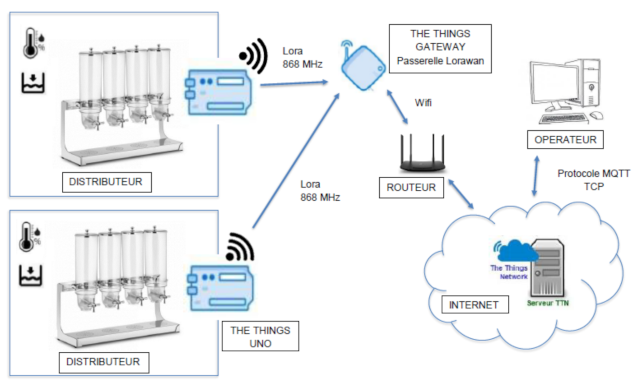
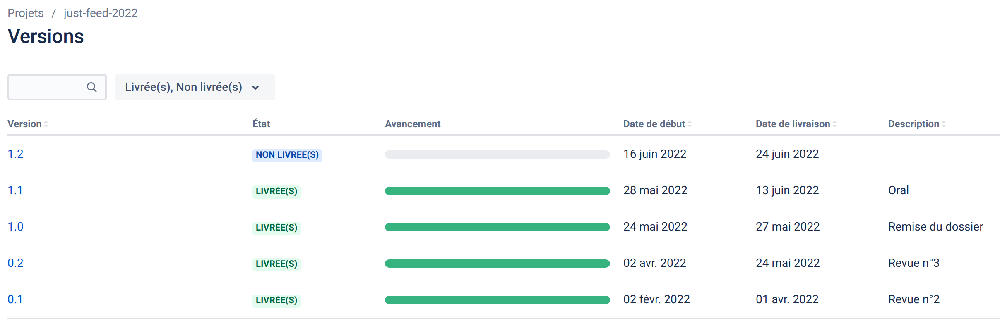
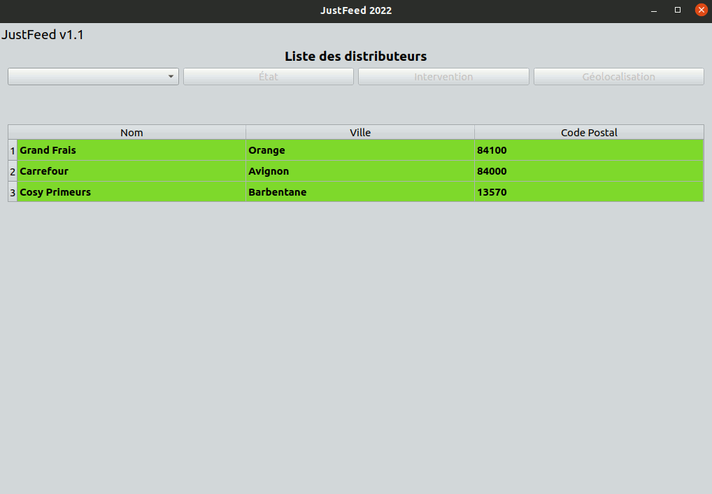
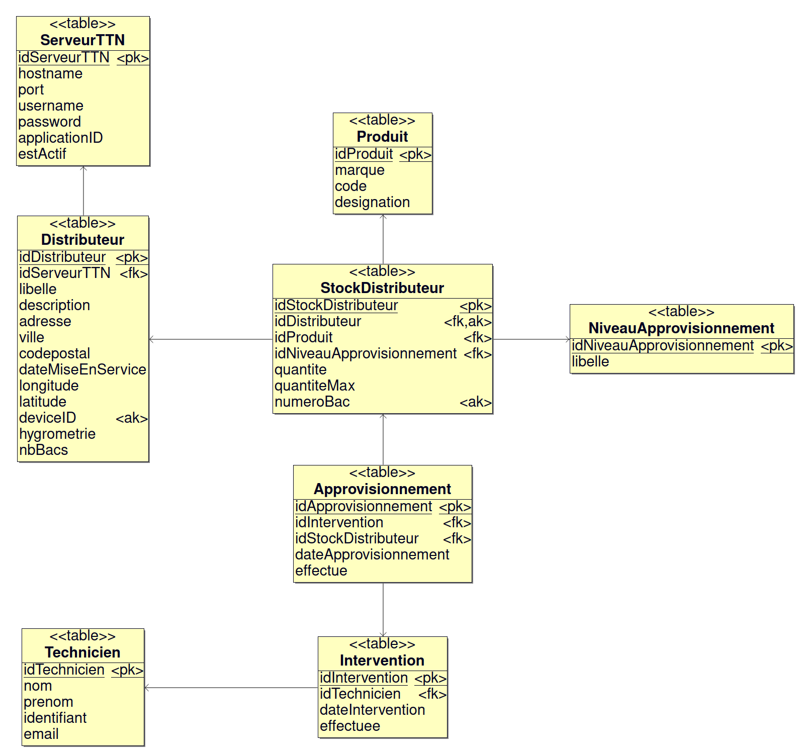

Le système doit permettre de surveiller à distance des distributeurs automatiques (fruits secs, pâtes, riz,...) afin d’optimiser le processus de réapprovisionnement.
Expression du besoin
Système de surveillance à distance de distributeurs automatiques permettant de :
- Envoyer des alertes lorsque le distributeur doit être réapprovisionné
- Signaler la nécessité de mettre en oeuvre des opérations de maintenance prédictive
- Superviser l’ensemble des distributeurs à partir d’une application

Auteur
Historique des versions

Fonctionnalités
- Lister les distributeurs
- Communiquer avec les distributeurs en MQTT
- Visualiser l’état d’un distributeur
- Géolocaliser sur une carte un distributeur, afficher ses coordonnées et adresse

TODO
- [ ] Sélectionner un distributeur pour une intervention
- [ ] Définir une intervention (type d’intervention, nombre de distributeurs à visiter, type de produits à réapprovisionner)
Resources logicielles
| Désignation | Caractéristiques |
| OS Poste de développement | PC sous GNU/Linux Ubuntu 20.04 |
| EDI | Qt Creator 4.11.0 |
| Développement | Qt 5.12.8 / C++ (GCC 9.3.0, 64 bits) |
Documentation du code
https://btssn-lasalle-84.github.io/just-feed-2022/
Base de données

Kanban
just-feed-2022
Qt MQTT
Qt MQTT fournit une implémentation conforme à la norme MQTT.
Qt MQTT fait parti de Qt For Automation et pas directement de Qt. Il faut donc l'installer.
- Identifier la version de Qt :
$ qmake -v
QMake version 3.1
Using Qt version 5.12.8 in /usr/lib/x86_64-linux-gnu
Ici, la version de Qt est 5.12.8.
- Récupérer le code source du module
mqtt en clonant le dépôt git
$ sudo git clone https://code.qt.io/qt/qtmqtt.git
$ cd qtmqtt/
- Sélectionner la branche qui correspond à la version de Qt utilisée
$ sudo git checkout 5.12.8
- Installer le paquet fournissant les fichiers d'en-tête de développement indépendants
$ sudo apt install qtbase5-private-dev
- Fabriquer et installer le module
mqtt
$ sudo qmake
$ sudo make
$ sudo make install
Pour accèder aux classes du module Qt MQTT, il faudra ajouter le module mqtt au fichier de projet .pro :
©️ LaSalle Avignon 2022